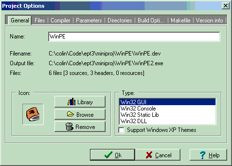
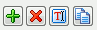
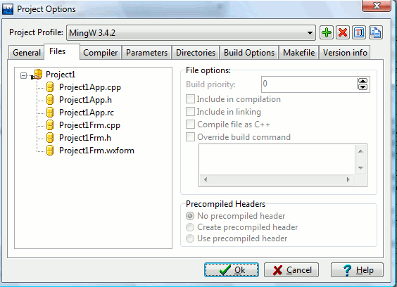
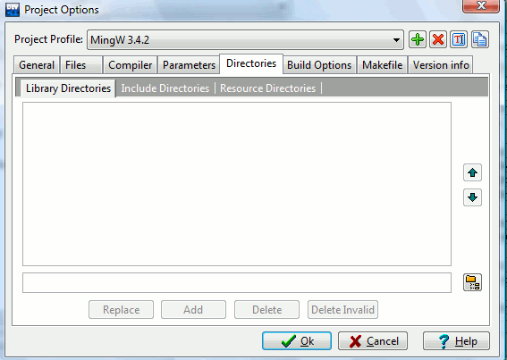
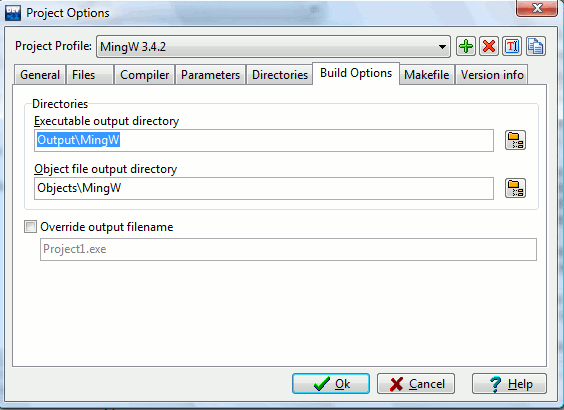
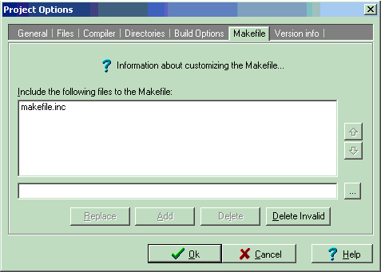
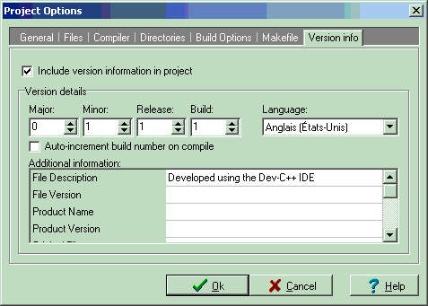

You can load the Project Options dialog by clicking on the Project
menu, then on Options (shortcut :Alt+P).
General sheet :

The first thing you may notice is that
wxDev-C++ allows for multiple
compiler profiles for the same project. In the Project
Profile
section there is a drop-down box with the available compiler profiles
for the current project. Users can switch the compiler profile between
different compilers (e.g. MingW gcc and VS 2008) or between different
settings of the same compiler (e.g. debug versus release profiles). You
may add, remove, rename, or copy the profiles for the current project
by clicking on the icons to the right of the drop-down box. (Note that these
actions only affect the current project.)
Other items of this window:
Name: Modify here the name of your project.
Icon :
You can assign an icon to your program, either by selecting one in the
Icon Library, or by giving your own icon using the Browse button.
Type : This is an important settings which
indicates which project type you are making. Select :
Win32 GUI : if your
application is a graphical user interface
Win32 Console : if your
application needs a console window (MS-DOS or command shell window)
Win32 Static Lib : if you are
creating a static library
Win32 DLL : if you are
creating a dynamic link library (DLL)
Files sheet :

Regardless
of the compiler used, wxDev-C++ uses the MingW make build system to
compile and link projects. Makefiles are automatically generated based
on the source files contained in the project. This window enables you
to modify the compilation commands and options for each source file to
customize the makefile that is generated.
Build priority : Increment this value in order to
have the source file compiled in priority of the others
Include in compilation : If not set, your file
will not be compiled.
Include in linking : Add the object file generated
from the source file to the linking stage
Compile file as C++ :
Check this flag if it is a C++ source file
Override build command : For experimented users
only. You can change there the command used by Dev-C++ to compile your
file
Compiler sheet :
See the Compiler Options section for more details.
Parameters sheet :
You can provide here command line arguments to the C/C++ compilers and
linker.
Use the linker parameters box to specify libraries to link with your
project.
For more information, please read the linker library section.
Directories sheet :

You can provide here a list of Includes, Resources and Libraries
directories to be searched when compiling/linking. These directories
are only used for the current project and profile.
Build Options sheet :

Executable output directory : Specify here the
directory where your executable will be created (default is project’s
directory).
Object file output directory : Specify here the
directory where your object files will be created (default is source
file’s directory).
Override output filename : You may change the
output filename of your program here.
Makefile sheet :

wxDev-C++
automatically creates a MingW Makefile for taking care of the building
process. If you are experienced with makefiles and want to add other
lines, you can do it here. Or, you can create your own custom makefile
and have the IDE use the custom makefile rather than the auto-generated
one.
Version Info sheet :

You
can specify version information for your program here. This info shows
up when you right click on the executable's icon and select
"Properties".